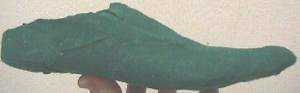
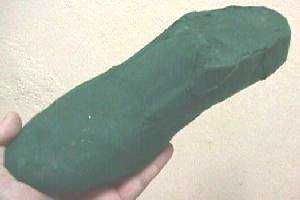
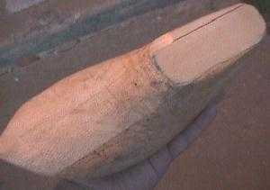
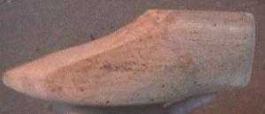
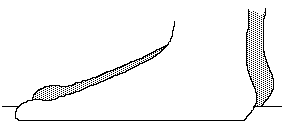
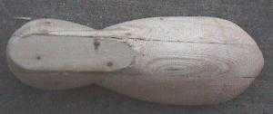
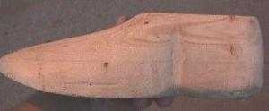

Making your own Lasts is one of those topics that can get you literally a different opinion on with every different person you ask. Some professionals will start muttering about obscure things such as "bottom radii", "inside cones", "degree in the heel" "medial swing", "extremes", "treadline", and goodness knows what all else, and claiming that if you aren't careful you will at best be wasting wood, and at worst, destroying your client's feet. The less religiously inclined will tell you that it's possible, but warn you, if you make a lousy last, it doesn't matter if you can make decent shoes. There are those will tell you that you can't make identically matching lasts, as though that means you you shouldn't try.
All I can tell you is just be careful. Lastmaking has always been a distinct and separate trade from shoemaking, and one that requires a certain degree of artistic ability as a sculptor as well as a fitter of one of the more difficult portion of the human anatomy to clothe -- not to mention a costly tool kit and set of skills entirely different than those needed to make shoes. Few shoemakers have ever been noteworthy lastmakers, and even fewer lastmakers have ever made shoes worth remembering. Now, after these frightening opening remarks, let me just say that in the face of all this, not having lasts at all can make what should be a challenging project somewhat more frustrating or even disastrous for the beginner -- as I assume most individuals just want to make an occasional pair of shoes to go with a period costume and are not setting up a production shoe shop.
So I hear you asking, why can't I just use modern lasts? You can, and no one will stop you. The only problem with modern lasts are their shapes. Very few modern lasts even begin to approach a medieval last shape, and virtually all shoes made in the past hundred years or so have been made with heels. That detail of construction means that virtually all lasts used in the past hunfred years or so have had that distinctive "s-curve" of the raised heel. As we discuss elsewhere in this document, raised heels aren't period and neither is that "s-curve" -- and that curve never goes away. So what? That curve also means that the last was shaped to help support the foot on a raised heel, and keep the foot from sliding forward down the shoe into the toe cap. The more pronounced the s-curve, the more that shoes made on that last, when worn without heels, are going to wind up squeezing the upper part of the metarsal region of the foot, resulting in quickly tiring, aching feet. This, by the way, may be the origin of one of those annoying myths -- "Period shoes are uncomfortable" since any shoe made on a last designed for a heel, but worn without one, CAN be uncomfortable.
Now all is not lost. I own a lovely pair of lasts myself that are for women's pointed flats in 7 1/2. The shape's a bit off, but they will make serviceable shoes, but I will have to build up the instep area so that anyone I know can actually wear shoes made on them. So, for the most part, it would be just as easy to make a new pair of lasts. And I'm not a particularly gifted woodworker.
There are basically two ways to make your own lasts. Plaster and wood. I'm going to include both, and I've made both, but to be honest, I prefer the wood even though it's more work.
Plaster
I'm going to quickly cover this since, really, I don't think you should waste your time with it. If you want to hear more about using plaster from someone who seems to believe in it, I suggest you find a copy of Mary Wales Loomis' Make your Own Shoes. Privately printed, 1992. I believe she has a web-site out there someplace selling the work. It's a nice book on making shoes and using plaster lasts to do it.
The method commonly described begins with taking an old but good-fitting pair of shoes. Some people suggest straightening several wire coat hangers, and then start bending them to shape to criss-cross the interior of your "sacrificial" shoes, being careful to not have them distort the shape of the shoes after they've been laced shut (assuming you are lacing these shoes). I don't know that the hangers are necessary. I didn't use them, and everything was fine. You then fill the shoe with plaster. After the plaster is dry, cut the shoe away, and let it sit for a few days to fully dry. Then sand and smooth the plaster, after which it may be best to cement some fabric to cover the plaster to protect it. You can also use a plastic bag taped tightly around the plaster to protect the last from moisture. You can even use more plaster to modify the last to change the toe shape to a more period style, to improve the fit of the shoes from the last, and so on. Also, since you are (hopefully) using a matching pair of shoes, the lasts they produce should actually match each other fairly well.


However, they won't take tacks, or hammering. You will have to lace your uppers on the last by sewing across the bottom, when you are shaping leather.
Wood


I have several quotes from different people on how to make lasts from wood, and then some thoughts of my own.
From D.A. Saguto, writing to H-Costume, September 8, 1998 (used with permission)
"For a one-time or occasional use, perfectly satisfactory lasts can be made from two sections of soft pine 2 x 4 glued together to obtain a dimension approaching 4" x 4". The insole pattern of the shoe style you want (not your footprint) is drawn on the bottom, and at a suitable distance from this the rough shape can be cut-out on a bandsaw. Since the foot has no sharp corners on it, but the last does, the broader profile of the last tends to overhang the "feather", or the defined sharp edge that is represented by the insole pattern. If you are confident, further stock removal can be done on the bandsaw, but for a real sense of satisfaction and better control, a fast-cutting "Sure-form" rasp is desirable here. In rounding the last to shape, the girth measurements and their locations on the last are critical. It should be noted that a last is never a one-to-one model of the foot, nor is the insole pattern (bottom shape) just a footprint with a toe extending off the end. This is why plaster casts are useless to make shoes over. They are decidedly too short and tend to be too big in girth. The shoe made over them ends up looking like an ugly shapeless foot-bag in wear, the soles walking quickly out of place and wrapping themselves up around the side of the foot.
A shoe last should be thought of merely as the container-shape, as it only defines a void or negative space--the interior compartment of the footwear. The upper design, linings, stiffeners, bottoms, etc., each can and do alter the outward appearance of the shoe by modifying the last's shape complicating matters, so one should not be dismayed if a trial shoe does not look exactly like the last it was made over. In numerous ways the last is different from the foot: it is longer at the toe, and in girth it must be smaller.
Further detailed instructions on how to make a last here would be senseless, because so much rests on the shoe style one hopes to reproduce. And needless to say, the lastmaking project will require numerous trial and error experiments, adjustments to the last (for building up, "Bondo" auto body putty is good), and more trial shoes until you have a shape that captures the style you want to reproduce and one that fits well. This is the same tried and true procedure shoemakers and designers go through before settling on a last design they like. Once you have a last you like, however, it will be as good as gold both for the style and the fit. For a good practical description of the traditional lastmaking process, I recommend: Last Making and Last Measurement; (London,1889) by Albert E. Tebbutt."
Instructions by David & Kai Kurnik, posted to Medieval-Leather, 13 March 1999 (used with permission)
The instructions below are for one last. This process should be repeated for the 'other' foot.
Materials:
3-4 feet of 2"x6"
2 feet of 2"x4"
Wood Glue
Wood Putty (for when you make a mistake)
Oak panel (optional)
Tools:
3 screw in eyelets (large)
2"-3" long Belt Sander (Coarse, and medium belts)
Good Saw (I use a Japanese woodworkers Saw. A good reciprocating saw should work well also.)
Vice Scroll saw or reciprocating saw
3 Large Clamps (the more the better)
Wood Chisels (optional)
Wood rasps (optional)
Five Steps:

Get the stick, or foor length, and then add a little to it. Make sure you
accurately note the shank length, the length from the back of the heel to the tread line,
the wide spot on the foot at the ball joint. The toe length is important too, but this
"hinge" point is critical to fit, especially if you are using any sort of
stiffened sole, or raised heels.


Be sure to test the shape with fitters. Experience, mine and others, says that even if you accurately transfer your measurements to the last, you are going to have to fiddle with it to get it to fit right.
Please note that there is not one hard and fast rule for all of this, and even the experts who do this all the time will sometimes have to "fiddle" with things.
For more of a discussion of making modern, welted shoes, try Making a Modern Shoe
Return to Contents
Footwear of the Middle Ages - Making Lasts, Copyright � 1999 I. Marc
Carlson.
This page is given for the free exchange of information, provided the author's name is
included in all future revisions, and no money change hands, other than as expressed in
theCopyright Page.